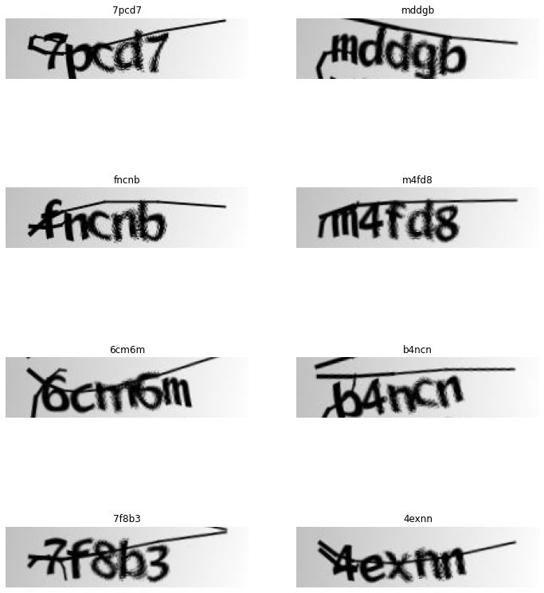

from fastai.vision.all import *
import PIL
from torch.nn import CTCLoss
from scipy.special import logsumexp3 approaches predicting the captcha with > 95% accuracy

Do you want a little bit more challenge than a traditional Image Classification? Let’s see if we can classify a sequence of classes rather than a single one ;).
In this blog post, I will try to break the captcha using 3 different approaches.
In this blog post:
- Build captcha
Dataloadersusing Mid-level fastai API - Tweak number of outputs can solve the problem
- Intuition about the receptive field and why we should remove the
AdaptiveAvgPool2dlayer - Sequential technique, Combining CNN + RNN -> CRNN with CTC Loss
Special thanks to these references below for helping me out during this development: - Fastai Captcha Recognition by Augustas Macijauskas - CRNN-Pytorch repo by GitYCC
Mid-Level fastai Dataloaders
In this part, we will use the Mid-Level API fastai to load data. This tool will help us to create Dataloaders which compatible with all the fastai ecosystems
In brief, we will create a CaptchaTransform ( similar to a Pytorch Datasets ) which returns something showable (CaptchaImage in this case)
Take a look at this fastai tutorial for more details
path = untar_data('https://github.com/AakashKumarNain/CaptchaCracker/raw/master/captcha_images_v2.zip')imgs = get_image_files(path)imgs(#1040) [Path('/home/ubuntu/.fastai/data/captcha_images_v2/by5y3.png'),Path('/home/ubuntu/.fastai/data/captcha_images_v2/efb3f.png'),Path('/home/ubuntu/.fastai/data/captcha_images_v2/76y6f.png'),Path('/home/ubuntu/.fastai/data/captcha_images_v2/e2d66.png'),Path('/home/ubuntu/.fastai/data/captcha_images_v2/c6we6.png'),Path('/home/ubuntu/.fastai/data/captcha_images_v2/p2m6n.png'),Path('/home/ubuntu/.fastai/data/captcha_images_v2/d66cn.png'),Path('/home/ubuntu/.fastai/data/captcha_images_v2/2yggg.png'),Path('/home/ubuntu/.fastai/data/captcha_images_v2/cffp4.png'),Path('/home/ubuntu/.fastai/data/captcha_images_v2/5npdn.png')...]
Note
Below is the mapping from label to index and vice-versa. The index starts from 1 because we save the 0 for UNKNOWN class which is use in the last section CNN + RNN
# Find all the unique labels
ld = set()
for f in imgs:
for l in f.stem:
ld.add(l)
label_mapper = "".join(sorted(ld))
l2i = { label_mapper[i]: i+1 for i in range(len(label_mapper)) } # labels to int + BLANK LABEL
i2l = { v: k for k, v in l2i.items() } # int to labelsl2i, i2l({'2': 1,
'3': 2,
'4': 3,
'5': 4,
'6': 5,
'7': 6,
'8': 7,
'b': 8,
'c': 9,
'd': 10,
'e': 11,
'f': 12,
'g': 13,
'm': 14,
'n': 15,
'p': 16,
'w': 17,
'x': 18,
'y': 19},
{1: '2',
2: '3',
3: '4',
4: '5',
5: '6',
6: '7',
7: '8',
8: 'b',
9: 'c',
10: 'd',
11: 'e',
12: 'f',
13: 'g',
14: 'm',
15: 'n',
16: 'p',
17: 'w',
18: 'x',
19: 'y'})def label_func(path): return tensor([l2i[l] for l in path.stem])def open_image(fname):
img = PIL.Image.open(fname).convert('RGB')
t = torch.Tensor(np.array(img))
return t.permute(2,0,1).double()/255.0class CaptchaImage(fastuple):
def show(self, ctx=None, **kwargs):
img,labels = self
t = tensor(img)
return show_image(t, title=''.join(str(i2l[i.item()]) for i in labels), ctx=ctx, **kwargs)class CaptchaTransform(Transform):
def __init__(self, files):
self.files = files
def encodes(self, i):
file = self.files[i]
label = label_func(file)
img = open_image(file)
return CaptchaImage(TensorImage(img), label)bs = 8splitter = RandomSplitter(valid_pct=0.1)
train_idx , valid_idx = splitter(imgs)
train_files = imgs[train_idx]
valid_files = imgs[valid_idx]
train_tl= TfmdLists(range(len(train_files)), CaptchaTransform(train_files))
valid_tl= TfmdLists(range(len(valid_files)), CaptchaTransform(valid_files))
dls = DataLoaders.from_dsets(train_tl,
valid_tl,
after_item=Resize((50,200), method=ResizeMethod.Squish),
after_batch=[Rotate(max_deg=10),
Brightness(max_lighting=0.5, p=0.8, batch=False),
Contrast(max_lighting=0.5, p=0.8, batch=False)],
bs=bs)@typedispatch
def show_batch(x:CaptchaImage, y, samples, ctxs=None, max_n=6, nrows=None, ncols=2, figsize=None, **kwargs):
if figsize is None: figsize = (ncols*6, max_n//ncols * 3)
if ctxs is None: ctxs = get_grid(min(x[0].shape[0], max_n), nrows=None, ncols=ncols, figsize=figsize)
for i,ctx in enumerate(ctxs): CaptchaImage(x[0][i],x[1][i]).show(ctx=ctx)one_batch = dls.one_batch()dls.show_batch(max_n=10)
n_chars = len(i2l)n_chars * 595An Image Classification Model with a tweak on output dimension
A simple image classification model is used here with the output dimension: Number_of_vocab x Number_of_classes. Then, while calculating the loss function, we reshape the dimension and calculating the Cross-Entropy loss for each class (The fastai CrossEntropyLossFlat can help you to specify which axis that you want to calculate the Cross-Entropy loss on)
n_class = n_chars + 1model = create_cnn_model(xresnet34, n_class*5)crit = LabelSmoothingCrossEntropyFlat()def loss_captcha(output, target):
output = output.view(-1, 5, n_class)
return crit(output, target)def char_accu(inp, targ, axis=-1):
inps = inp.reshape(-1, 5, n_class)
pred = inps.argmax(dim=-1)
return (pred == targ).sum()/(pred.shape[0]*pred.shape[1])def captcha_accu(inp, targ, axis=-1):
inps = inp.reshape(-1, 5, n_class)
pred = inps.argmax(dim=-1)
return ((pred == targ).all(axis=1)).sum()/targ.shape[0]learn = Learner(dls, model, loss_captcha, metrics=[char_accu, captcha_accu])model = model.cuda()
dls = dls.cuda()learn.fit_one_cycle(60, 3e-3)| epoch | train_loss | valid_loss | char_accu | captcha_accu | time |
|---|---|---|---|---|---|
| 0 | 4.417060 | 3.768889 | 0.065385 | 0.000000 | 00:05 |
| 1 | 4.238056 | 5.701259 | 0.055769 | 0.000000 | 00:05 |
| 2 | 3.933014 | 3.674879 | 0.088462 | 0.000000 | 00:05 |
| 3 | 3.719078 | 5.090882 | 0.075000 | 0.000000 | 00:05 |
| 4 | 3.548473 | 3.824108 | 0.132692 | 0.000000 | 00:05 |
| 5 | 3.366105 | 3.826407 | 0.113462 | 0.000000 | 00:05 |
| 6 | 3.136746 | 3.577558 | 0.115385 | 0.000000 | 00:05 |
| 7 | 2.936203 | 3.092070 | 0.194231 | 0.000000 | 00:05 |
| 8 | 2.729806 | 3.936151 | 0.196154 | 0.000000 | 00:05 |
| 9 | 2.521348 | 4.372227 | 0.161538 | 0.000000 | 00:05 |
| 10 | 2.263230 | 3.843181 | 0.184615 | 0.000000 | 00:05 |
| 11 | 2.063784 | 6.484088 | 0.094231 | 0.000000 | 00:05 |
| 12 | 1.915519 | 5.548406 | 0.196154 | 0.000000 | 00:05 |
| 13 | 1.772406 | 2.161972 | 0.426923 | 0.000000 | 00:05 |
| 14 | 1.659181 | 2.289798 | 0.411538 | 0.000000 | 00:05 |
| 15 | 1.480252 | 6.103688 | 0.165385 | 0.000000 | 00:05 |
| 16 | 1.440136 | 1.914036 | 0.509615 | 0.009615 | 00:05 |
| 17 | 1.336665 | 3.500629 | 0.332692 | 0.009615 | 00:05 |
| 18 | 1.275441 | 1.713563 | 0.590385 | 0.076923 | 00:05 |
| 19 | 1.219574 | 1.325677 | 0.738462 | 0.240385 | 00:05 |
| 20 | 1.165449 | 1.249834 | 0.771154 | 0.298077 | 00:05 |
| 21 | 1.132226 | 1.372405 | 0.711538 | 0.163462 | 00:05 |
| 22 | 1.072073 | 1.138467 | 0.823077 | 0.403846 | 00:05 |
| 23 | 1.045686 | 1.143437 | 0.832692 | 0.432692 | 00:05 |
| 24 | 1.027944 | 1.020135 | 0.890385 | 0.605769 | 00:05 |
| 25 | 0.980347 | 0.953016 | 0.905769 | 0.673077 | 00:05 |
| 26 | 0.955928 | 0.885346 | 0.938461 | 0.769231 | 00:05 |
| 27 | 0.938319 | 0.880523 | 0.940385 | 0.778846 | 00:05 |
| 28 | 0.912880 | 0.909565 | 0.926923 | 0.692308 | 00:05 |
| 29 | 0.888791 | 0.846983 | 0.957692 | 0.836538 | 00:05 |
| 30 | 0.877755 | 0.829840 | 0.959615 | 0.855769 | 00:05 |
| 31 | 0.854199 | 0.870150 | 0.946154 | 0.788462 | 00:05 |
| 32 | 0.838330 | 0.819317 | 0.959615 | 0.855769 | 00:05 |
| 33 | 0.824045 | 0.791964 | 0.978846 | 0.951923 | 00:05 |
| 34 | 0.821468 | 0.794070 | 0.969231 | 0.894231 | 00:05 |
| 35 | 0.803675 | 0.774516 | 0.969231 | 0.913462 | 00:05 |
| 36 | 0.800759 | 0.771277 | 0.975000 | 0.932692 | 00:05 |
| 37 | 0.784726 | 0.774723 | 0.971154 | 0.913462 | 00:05 |
| 38 | 0.776317 | 0.733620 | 0.986538 | 0.971154 | 00:05 |
| 39 | 0.767470 | 0.736605 | 0.982692 | 0.951923 | 00:05 |
| 40 | 0.757092 | 0.729704 | 0.978846 | 0.942308 | 00:05 |
| 41 | 0.755353 | 0.721849 | 0.984615 | 0.961538 | 00:05 |
| 42 | 0.754742 | 0.728808 | 0.978846 | 0.951923 | 00:05 |
| 43 | 0.748297 | 0.719470 | 0.982692 | 0.961538 | 00:05 |
| 44 | 0.742404 | 0.716713 | 0.986538 | 0.971154 | 00:05 |
| 45 | 0.735511 | 0.707033 | 0.984615 | 0.961538 | 00:05 |
| 46 | 0.735871 | 0.699644 | 0.984615 | 0.961538 | 00:06 |
| 47 | 0.728447 | 0.696534 | 0.984615 | 0.961538 | 00:05 |
| 48 | 0.723877 | 0.706259 | 0.984615 | 0.961538 | 00:05 |
| 49 | 0.728841 | 0.698290 | 0.984615 | 0.961538 | 00:05 |
| 50 | 0.721174 | 0.697634 | 0.984615 | 0.961538 | 00:05 |
| 51 | 0.720327 | 0.697556 | 0.986538 | 0.971154 | 00:05 |
| 52 | 0.714673 | 0.690376 | 0.988462 | 0.971154 | 00:06 |
| 53 | 0.717317 | 0.693437 | 0.984615 | 0.961538 | 00:05 |
| 54 | 0.714745 | 0.691280 | 0.986538 | 0.971154 | 00:05 |
| 55 | 0.715825 | 0.685640 | 0.984615 | 0.961538 | 00:06 |
| 56 | 0.711018 | 0.691839 | 0.986538 | 0.971154 | 00:05 |
| 57 | 0.713582 | 0.688716 | 0.986538 | 0.971154 | 00:06 |
| 58 | 0.713092 | 0.687872 | 0.986538 | 0.971154 | 00:06 |
| 59 | 0.711346 | 0.691615 | 0.988462 | 0.971154 | 00:05 |
learn.recorder.plot_loss()Wow! With this simple trick, we can reach 97% accuracy for the prediction 5-digits captcha. Very impressive! Let’s see if we can do it better with other techniques
Remove the AdaptiveAvgPool2d to reserve spatial information
In the model used above, between the body and head, there is an AdaptiveAvgPool2d layer, which blurs all essential spatial information. So let’s remove it and create our own head

Intuition
From the Illustration above, we can see that, with AdaptiveAvgPool2d, each element in the feature vector must understand the whole Captcha, to classify correctly. To facilitate the work, by removing the Pooling layer, each feature needs to represent only a part of the Captcha, or in the best case, a letter. Combining all the letter’s features together can give us a Captcha prediction
body = create_body(xresnet34)head = nn.Sequential(
Flatten(),
nn.ReLU(),
nn.Dropout(0.5),
nn.Linear(7168,1000),
nn.ReLU(),
nn.BatchNorm1d(1000),
nn.Dropout(0.5),
nn.Linear(1000,n_class*5),
)model = nn.Sequential(body, head)model.cuda()
dls.cuda()<fastai.data.core.DataLoaders>learn = Learner(dls, model, loss_captcha, metrics=[char_accu, captcha_accu])learn.fit_one_cycle(60, 3e-3)| epoch | train_loss | valid_loss | char_accu | captcha_accu | time |
|---|---|---|---|---|---|
| 0 | 3.056647 | 2.770755 | 0.221154 | 0.000000 | 00:06 |
| 1 | 2.707805 | 2.455260 | 0.351923 | 0.019231 | 00:06 |
| 2 | 2.307795 | 2.130244 | 0.434615 | 0.048077 | 00:06 |
| 3 | 1.944143 | 1.862135 | 0.544231 | 0.067308 | 00:06 |
| 4 | 1.663925 | 1.757791 | 0.603846 | 0.076923 | 00:06 |
| 5 | 1.499317 | 1.516997 | 0.653846 | 0.153846 | 00:06 |
| 6 | 1.436849 | 1.711082 | 0.590385 | 0.048077 | 00:06 |
| 7 | 1.486420 | 1.472152 | 0.676923 | 0.153846 | 00:06 |
| 8 | 1.389985 | 1.436426 | 0.725000 | 0.192308 | 00:06 |
| 9 | 1.344463 | 1.969319 | 0.588462 | 0.067308 | 00:06 |
| 10 | 1.500018 | 1.610145 | 0.661538 | 0.105769 | 00:06 |
| 11 | 1.370128 | 1.287863 | 0.821154 | 0.451923 | 00:06 |
| 12 | 1.320343 | 1.476295 | 0.742308 | 0.240385 | 00:06 |
| 13 | 1.276946 | 3.231544 | 0.340385 | 0.000000 | 00:06 |
| 14 | 1.580945 | 1.563601 | 0.763462 | 0.307692 | 00:06 |
| 15 | 1.444904 | 1.174396 | 0.834615 | 0.432692 | 00:06 |
| 16 | 1.276948 | 1.223626 | 0.817308 | 0.403846 | 00:06 |
| 17 | 1.145310 | 1.043204 | 0.901923 | 0.653846 | 00:06 |
| 18 | 1.079106 | 1.131395 | 0.909615 | 0.701923 | 00:06 |
| 19 | 1.054410 | 1.013260 | 0.901923 | 0.634615 | 00:06 |
| 20 | 1.059869 | 1.099213 | 0.892308 | 0.634615 | 00:06 |
| 21 | 1.031296 | 0.993608 | 0.905769 | 0.663462 | 00:06 |
| 22 | 0.994466 | 0.873521 | 0.944231 | 0.788462 | 00:06 |
| 23 | 1.009694 | 0.865026 | 0.948077 | 0.817308 | 00:06 |
| 24 | 0.932827 | 1.105105 | 0.951923 | 0.875000 | 00:06 |
| 25 | 0.887062 | 0.852510 | 0.950000 | 0.836538 | 00:06 |
| 26 | 0.884278 | 0.817573 | 0.959615 | 0.875000 | 00:06 |
| 27 | 0.862702 | 0.815369 | 0.963462 | 0.865385 | 00:06 |
| 28 | 0.853542 | 0.814780 | 0.969231 | 0.903846 | 00:06 |
| 29 | 0.852293 | 0.793552 | 0.971154 | 0.903846 | 00:06 |
| 30 | 0.832754 | 1.187254 | 0.892308 | 0.605769 | 00:06 |
| 31 | 0.824426 | 0.905626 | 0.971154 | 0.923077 | 00:06 |
| 32 | 0.802780 | 0.747221 | 0.973077 | 0.913462 | 00:06 |
| 33 | 0.807151 | 1.262912 | 0.957692 | 0.913462 | 00:06 |
| 34 | 0.788464 | 0.744047 | 0.980769 | 0.942308 | 00:06 |
| 35 | 0.772782 | 0.724258 | 0.982692 | 0.932692 | 00:06 |
| 36 | 0.764042 | 0.716053 | 0.980769 | 0.951923 | 00:06 |
| 37 | 0.755922 | 0.726421 | 0.980769 | 0.942308 | 00:06 |
| 38 | 0.755969 | 0.716299 | 0.984615 | 0.951923 | 00:06 |
| 39 | 0.742237 | 0.709827 | 0.988461 | 0.971154 | 00:06 |
| 40 | 0.741012 | 0.700651 | 0.986538 | 0.961538 | 00:06 |
| 41 | 0.739579 | 0.746366 | 0.975000 | 0.923077 | 00:06 |
| 42 | 0.734317 | 0.740812 | 0.978846 | 0.942308 | 00:06 |
| 43 | 0.728524 | 0.689804 | 0.984615 | 0.951923 | 00:06 |
| 44 | 0.721895 | 0.686216 | 0.984615 | 0.961538 | 00:06 |
| 45 | 0.718292 | 0.680776 | 0.984615 | 0.961538 | 00:06 |
| 46 | 0.711961 | 0.675663 | 0.988462 | 0.971154 | 00:06 |
| 47 | 0.711802 | 0.678798 | 0.988461 | 0.971154 | 00:06 |
| 48 | 0.712833 | 0.678948 | 0.986538 | 0.961538 | 00:06 |
| 49 | 0.711009 | 0.678042 | 0.984615 | 0.961538 | 00:06 |
| 50 | 0.705792 | 0.671570 | 0.986538 | 0.961538 | 00:06 |
| 51 | 0.703747 | 0.669645 | 0.986538 | 0.961538 | 00:06 |
| 52 | 0.700930 | 0.668842 | 0.988462 | 0.971154 | 00:06 |
| 53 | 0.700268 | 0.667778 | 0.988461 | 0.971154 | 00:06 |
| 54 | 0.698437 | 0.673563 | 0.988461 | 0.971154 | 00:06 |
| 55 | 0.702755 | 0.665972 | 0.988462 | 0.961538 | 00:06 |
| 56 | 0.699661 | 0.668209 | 0.988461 | 0.971154 | 00:06 |
| 57 | 0.695964 | 0.666184 | 0.988461 | 0.971154 | 00:06 |
| 58 | 0.697385 | 0.665079 | 0.992308 | 0.980769 | 00:06 |
| 59 | 0.702616 | 0.668129 | 0.988462 | 0.961538 | 00:06 |
learn.recorder.plot_loss()We have a quite similar result to the previous model after 60 epochs. However, this one learns much faster. After 15 epochs, it attains already 43% captcha accuracy while the With AdaptiveAvgPool2d is still at 0%
CRNN + CTC Loss
One can imagine, from the intuition of the last section, if we can extract features from letters and then predict the captcha, How about using a Recurrent Neural Network (RNN)? Is it for solving sequence problems right?
Yes, yes, It is the CRNN.
Note
Feel free to run the model step by step through each layer to understand better the dimension
Note
The Sequence Length of the output doesn’t necessarily equal to the Captcha Length (which is 5 in our case) because our loss function CTC Loss knows how to handle it
The CNN-Body model I use here is resnet34, but not the entire one. We cut it after some layers. The reason is, the deeper the image passes through the CNN the more its Width shrink, and it can not be smaller than our captcha length (which is 5). Below you can see I choose to cut after 7 layers so the feature’s Width is still 13 (the last dimension of the tensor)
body = create_body(resnet34, cut=7)n_class = n_chars + 1n_class20By running the CNN body manually, I can know the number of output features, height and width which will be used later for building the CRNN model
body(one_batch[0].cpu()).shapetorch.Size([8, 256, 4, 13])class CRNN(nn.Module):
def __init__(self, output_channel, H, W, n_class, map_to_seq_hidden=64, rnn_hidden_1=256, rnn_hidden_2=128):
super(CRNN, self).__init__()
self.body = create_body(resnet34, cut=7)
self.map_to_seq = LinBnDrop(output_channel * H, map_to_seq_hidden, p=0.1, bn=False, lin_first=False)
self.rnn1 = nn.LSTM(map_to_seq_hidden, rnn_hidden_1, bidirectional=True)
self.rnn2 = nn.LSTM(2 * rnn_hidden_1, rnn_hidden_2, bidirectional=True)
self.dense = LinBnDrop(2 * rnn_hidden_2, n_class, p=0.1, bn=False, lin_first=False)
def forward(self, images):
# shape of images: (batch, channel, height, width)
conv = self.body(images)
batch, channel, height, width = conv.size()
conv = conv.view(batch, channel * height, width)
conv = conv.permute(2, 0, 1) # (width, batch, feature)
seq = self.map_to_seq(conv)
recurrent, _ = self.rnn1(seq)
recurrent, _ = self.rnn2(recurrent)
output = self.dense(recurrent)
return output # shape: (seq_len, batch, num_class)output_channel = 256
H = 4
W = 13model = CRNN(output_channel, H, W, n_class)steps = WThe loss function we use here is CTC Loss. In brief, it is a loss function that can handle a sequence classification without a specific alignment (Because we don’t have a character-level dataset and the span of each character is random). An Illustration is below (Taken from https://sid2697.github.io/Blog_Sid/algorithm/2019/10/19/CTC-Loss.html). In CTC Loss, it allows a repeated prediction with a character that spans through multiple positions and also a blank character. However, we need a decoder to decode later the output. I will talk about it in the next section

criterion = nn.CTCLoss()def loss_captcha_ctc(output, target):
batch_size = target.shape[0]
input_lengths = torch.LongTensor([steps] * batch_size)
target_lengths = torch.LongTensor([5] * batch_size)
log_probs = torch.nn.functional.log_softmax(output, dim=2)
return criterion(log_probs, target, input_lengths, target_lengths)Decoder and Metrics
As the output of CRNN model is not exactly corresponding to the Groud-Truth, we must have something to decode it and get the final prediction. Check this tutorial for more details https://towardsdatascience.com/beam-search-decoding-in-ctc-trained-neural-networks-5a889a3d85a7. Below there is code for the greedy and beam-search technique
blank = 0
beam_size = 10NINF = -1 * float('inf')
DEFAULT_EMISSION_THRESHOLD = 0.01def _reconstruct(labels, blank=0):
new_labels = []
# merge same labels
previous = None
for l in labels:
if l != previous:
new_labels.append(l)
previous = l
# delete blank
new_labels = [l for l in new_labels if l != blank]
return new_labelsdef greedy_decode(emission_log_prob, blank=0, **kwargs):
labels = np.argmax(emission_log_prob, axis=-1)
labels = _reconstruct(labels, blank=blank)
return labelsdef beam_search_decode(emission_log_prob, blank=0, **kwargs):
beam_size = kwargs['beam_size']
emission_threshold = kwargs.get('emission_threshold', np.log(DEFAULT_EMISSION_THRESHOLD))
length, class_count = emission_log_prob.shape
beams = [([], 0)] # (prefix, accumulated_log_prob)
for t in range(length):
new_beams = []
for prefix, accumulated_log_prob in beams:
for c in range(class_count):
log_prob = emission_log_prob[t, c]
if log_prob < emission_threshold:
continue
new_prefix = prefix + [c]
# log(p1 * p2) = log_p1 + log_p2
new_accu_log_prob = accumulated_log_prob + log_prob
new_beams.append((new_prefix, new_accu_log_prob))
# sorted by accumulated_log_prob
new_beams.sort(key=lambda x: x[1], reverse=True)
beams = new_beams[:beam_size]
# sum up beams to produce labels
total_accu_log_prob = {}
for prefix, accu_log_prob in beams:
labels = tuple(_reconstruct(prefix, blank))
# log(p1 + p2) = logsumexp([log_p1, log_p2])
total_accu_log_prob[labels] = \
logsumexp([accu_log_prob, total_accu_log_prob.get(labels, NINF)])
labels_beams = [(list(labels), accu_log_prob)
for labels, accu_log_prob in total_accu_log_prob.items()]
labels_beams.sort(key=lambda x: x[1], reverse=True)
labels = labels_beams[0][0]
return labelsAs we can have a prediction from the decoder that has length > 5, we don’t have character level accuracy for the metrics but only whole captcha accuracy
def captcha_accu_ctc(pred, targ, axis=-1):
log_probs = torch.nn.functional.log_softmax(pred, dim=2)
emission_log_probs = np.transpose(log_probs.detach().cpu().numpy(), (1, 0, 2))
decoder = beam_search_decode
label2char = i2l
decoded_list = []
for emission_log_prob in emission_log_probs:
decoded = decoder(emission_log_prob, blank=blank, beam_size=beam_size)
decoded_list.append(decoded)
count_ok = 0
for decode, gt in zip(decoded_list, targ):
if len(decode) == len(gt):
count_ok += (torch.tensor(decode).cuda() == gt).all().item()
return count_ok/targ.shape[0]# loss_captcha_ctc(pred, one_batch[1])dls = dls.cuda()
model = model.cuda()learn = Learner(dls, model, loss_func=loss_captcha_ctc, metrics=[captcha_accu_ctc])
# learn = Learner(dls, model, loss_func=loss_captcha_ctc)learn.fit_one_cycle(1,1e-6)| epoch | train_loss | valid_loss | captcha_accu_ctc | time |
|---|---|---|---|---|
| 0 | 0.001245 | 0.070678 | 0.961538 | 00:06 |
learn.lr_find()SuggestedLRs(valley=0.0014454397605732083)learn.fit_one_cycle(60, 3e-3)| epoch | train_loss | valid_loss | captcha_accu_ctc | time |
|---|---|---|---|---|
| 0 | 3.364362 | 3.221772 | 0.000000 | 00:05 |
| 1 | 3.239760 | 3.222240 | 0.000000 | 00:05 |
| 2 | 3.198520 | 3.179216 | 0.000000 | 00:05 |
| 3 | 3.068399 | 3.082180 | 0.000000 | 00:05 |
| 4 | 2.935494 | 2.940528 | 0.000000 | 00:05 |
| 5 | 2.778541 | 2.834429 | 0.000000 | 00:05 |
| 6 | 2.595863 | 2.414017 | 0.000000 | 00:05 |
| 7 | 2.398474 | 2.306193 | 0.000000 | 00:05 |
| 8 | 2.133149 | 2.030112 | 0.009615 | 00:05 |
| 9 | 1.933357 | 2.035026 | 0.000000 | 00:05 |
| 10 | 1.740602 | 3.510546 | 0.000000 | 00:05 |
| 11 | 1.571230 | 1.606472 | 0.000000 | 00:05 |
| 12 | 1.481388 | 1.380839 | 0.028846 | 00:05 |
| 13 | 1.363306 | 1.311289 | 0.028846 | 00:05 |
| 14 | 1.196686 | 1.012929 | 0.125000 | 00:05 |
| 15 | 0.932915 | 0.713615 | 0.192308 | 00:05 |
| 16 | 0.730192 | 0.596288 | 0.278846 | 00:05 |
| 17 | 0.589729 | 0.484889 | 0.442308 | 00:05 |
| 18 | 0.393728 | 0.315344 | 0.567308 | 00:05 |
| 19 | 0.335306 | 0.282954 | 0.663462 | 00:05 |
| 20 | 0.253060 | 0.164563 | 0.826923 | 00:05 |
| 21 | 0.192399 | 0.202485 | 0.778846 | 00:05 |
| 22 | 0.152099 | 0.170849 | 0.788462 | 00:05 |
| 23 | 0.165517 | 0.182350 | 0.769231 | 00:05 |
| 24 | 0.143058 | 0.116091 | 0.875000 | 00:05 |
| 25 | 0.140082 | 0.098341 | 0.884615 | 00:05 |
| 26 | 0.107128 | 0.153724 | 0.846154 | 00:05 |
| 27 | 0.104198 | 0.064582 | 0.903846 | 00:05 |
| 28 | 0.075773 | 0.164378 | 0.826923 | 00:05 |
| 29 | 0.073986 | 0.095392 | 0.942308 | 00:05 |
| 30 | 0.121426 | 0.098069 | 0.875000 | 00:05 |
| 31 | 0.061526 | 0.085097 | 0.913462 | 00:05 |
| 32 | 0.050841 | 0.033660 | 0.961538 | 00:05 |
| 33 | 0.041742 | 0.113056 | 0.884615 | 00:05 |
| 34 | 0.037825 | 0.035997 | 0.980769 | 00:05 |
| 35 | 0.042165 | 0.057766 | 0.923077 | 00:05 |
| 36 | 0.040758 | 0.056158 | 0.961538 | 00:05 |
| 37 | 0.013569 | 0.063323 | 0.951923 | 00:05 |
| 38 | 0.017145 | 0.041725 | 0.951923 | 00:05 |
| 39 | 0.016637 | 0.050826 | 0.951923 | 00:05 |
| 40 | 0.015019 | 0.039701 | 0.971154 | 00:05 |
| 41 | 0.007477 | 0.036252 | 0.980769 | 00:05 |
| 42 | 0.017243 | 0.036068 | 0.980769 | 00:05 |
| 43 | 0.011176 | 0.045191 | 0.951923 | 00:05 |
| 44 | 0.010634 | 0.045656 | 0.971154 | 00:05 |
| 45 | 0.005593 | 0.048920 | 0.961538 | 00:05 |
| 46 | 0.002363 | 0.049634 | 0.961538 | 00:05 |
| 47 | 0.005349 | 0.049498 | 0.961538 | 00:05 |
| 48 | 0.012180 | 0.036904 | 0.971154 | 00:05 |
| 49 | 0.001877 | 0.035886 | 0.980769 | 00:05 |
| 50 | 0.002923 | 0.043079 | 0.971154 | 00:05 |
| 51 | 0.002380 | 0.034152 | 0.980769 | 00:05 |
| 52 | 0.002510 | 0.038204 | 0.980769 | 00:05 |
| 53 | 0.001762 | 0.034696 | 0.980769 | 00:05 |
| 54 | 0.002121 | 0.037318 | 0.980769 | 00:05 |
| 55 | 0.000552 | 0.043198 | 0.971154 | 00:05 |
| 56 | 0.000387 | 0.041396 | 0.980769 | 00:05 |
| 57 | 0.001379 | 0.037345 | 0.980769 | 00:05 |
| 58 | 0.002729 | 0.040222 | 0.971154 | 00:05 |
| 59 | 0.000564 | 0.051966 | 0.971154 | 00:05 |
learn.recorder.plot_loss()Ok, we have good results too. As it is a very simple dataset, it’s hard to say which technique is better. However, the CRNN training loss is much lower than validation loss, It might be a hint that we can tune it to get more accuracy or training faster? Please DM me if you have an idea about it. Thanks